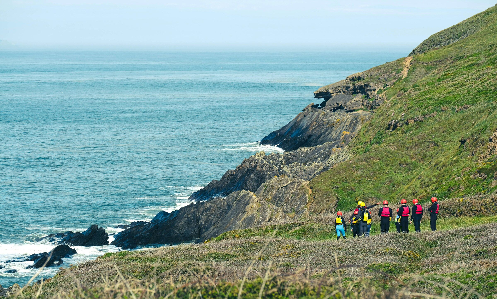
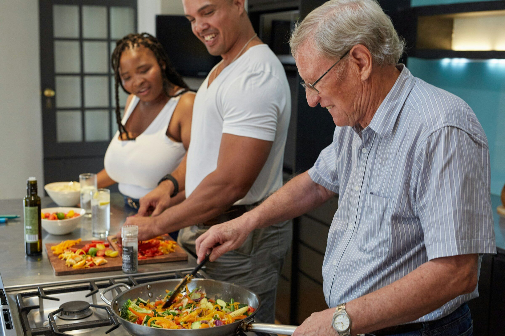

Company Offsite Trends for 2027
The company offsite trends shaping 2027: purpose-led retreats, smaller and more frequent meetups, shoulder-season travel, local experiences and smarter budgets.

As teams plan next year's calendar, a few clear trends are shaping how companies run retreats. Here's what we see in conversations with teams and venues, and what it means for your 2027 offsite.
1. Every retreat needs a clear purpose
Budgets are under more scrutiny. Retreats that survive are the ones tied to a business goal: alignment after a reorganisation, onboarding a wave of new hires, reconnecting a remote team. Expect more requests for a one-page business case (see how to prove offsite ROI).
2. Connection over content
Recent industry data shows team building is now the main goal of most offsites (see our offsite statistics). Programmes are shifting from back-to-back presentations to shared experiences: cooking classes, hikes, sailing and long dinners.
3. Smaller, more frequent meetups
Alongside the annual all-hands, more teams organise smaller departmental retreats two to four times a year. They are cheaper, easier to plan and keep relationships alive. Read about the quarterly offsite.
4. Shoulder-season travel
To control costs and avoid crowds, teams are moving retreats to March–April and October–November. Southern Europe is perfect then: Lisbon, Seville, Crete and the Algarve stay warm and venues offer better rates.
5. Exclusive-use venues
Villas, quintas and small hotels booked out entirely continue to grow in popularity for groups under 40. They create privacy and a "home for the week" feeling.

6. Local, authentic experiences
Teams want experiences with real local people: a fisherman's lunch, a family-run vineyard, a ceramics workshop with an artisan. Generic activities are losing ground. See our team-building activities.
7. Wellbeing built in
Free time, healthy food, optional morning sessions and alcohol-free options are now expected. Read our guide to wellness and sustainable offsites.
8. Fewer flights, better flights
Companies are choosing destinations with direct flights from their main hubs, staying longer in one place and coordinating arrivals. Central flight booking is becoming the norm for distributed teams. That's exactly what we do: every participant's flight, from their own city.
9. Value destinations rising
Poland, Hungary, the Czech Republic, Greece and northern Portugal attract teams looking for quality at a better price. Explore Kraków, Budapest and Porto, or read our Poland guide.
10. All-inclusive budgets
Finance teams want one number per person that includes everything: flights, venue, meals, activities and transfers. No more surprise invoices. Our budget calculator is built around that idea.
Plan your 2027 retreat
Popular months fill early. Book a 15-minute call to secure your dates and receive 3 proposals, flights included. See also our 2027 offsite calendar.
Frequently asked questions
What are the biggest trends in company offsites for 2027?
Purpose-led retreats, a focus on connection, smaller and more frequent meetups, shoulder-season travel, exclusive-use venues and all-inclusive budgets.
Are company retreats still popular?
Yes. Recent surveys show most companies hold at least one offsite a year, and many have increased their budgets compared with 2019.
When should we book a 2027 company retreat?
Three to six months ahead for small groups, and six to nine months ahead for large groups or peak months such as May, June and September.
Let's plan your team's next retreat
Venue, programme, activities and every participant's flight, handled by one team. It starts with a 15-minute call.
Keep reading
All articles
Company Offsite Statistics: What the Data Says
Key company offsite statistics from recent reports: how often companies meet, budgets, goals, favourite months and destinations, and what it means for you.

Hybrid Work and the Rise of the Quarterly Offsite
Why hybrid and remote companies are moving to quarterly offsites, how to plan a lighter meetup format, and how to keep costs and logistics under control.

Wellness and Sustainable Offsites: How to Plan a Retreat That Recharges
How to plan a wellness-focused, lower-impact company retreat: venues, programme ideas, travel choices and local partners that make a real difference.